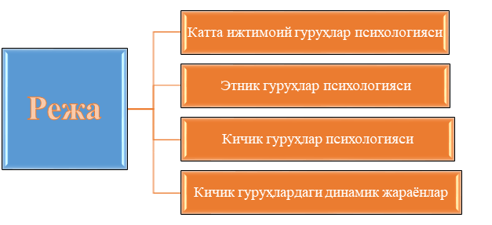
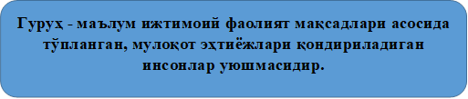
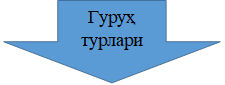

1-Режа. Катта ижтимоий гуруҳлар психологияси
Ҳар бир шахс ўз фаолиятини турли гуруҳлар шароитида ёки турли гуруҳлар таъсирида амалга оширади. Чунки жамиятдан четда қолган ёки инсонлар гуруҳига умуман қўшилмайдиган индивиднинг ўзи йўқ. Киши жамиятда яшар экан, у доимо турли инсонлар билан мулоқотда, ўзаро таъсирда бўлади, бу мулоқот жараёнлари эса доимо кишилар гуруҳида рўй беради. Шунинг учун ҳам гуруҳлар муаммоси, уни ўрганиш ва гуруҳларнинг шаклланишига оид илмий хулосалар чиқариш ижтимоий психологиянинг асосий мавзуларидан ва муаммоларидан биридир.
Психологик маънода гуруҳ - бу умумий белгилар умумий фаолият, мулоқот ҳамда умумий мақсад асосида бирлашган кишилар уюшмасидир. Умуман одамлар гуруҳи ташкил топиши учун албатта, қандайдир умумий мақсад ёки тилаклар, умумий белгилар бўлиши шарт. Масалан, талабалар гуруҳи учун умумий нарсалар кўп (ўқув фаолияти, билим олиш, ёшларга хос бирликлар (ўспирин, ёшлар, маълум ўқув юртида таълим олиш истаги ва ҳоказо). Кўчада бирор тасодиф рўй берганлиги учун тўпланган кишилар учун ҳам умумий бўлган нарса бор - бу қизиқувчанлик бўлиб ўтган ҳодисага гувоҳлик, унга умумий муносабатдир.
Гуруҳни алоҳида шахслар ташкил этади, лекин ҳар бир гуруҳ психологияси уни ташкил этувчи алоҳида шахслар психологиясидан фарқ қилади ва ўзига хос қонуниятларга бўйсунади. Айни шу қонуниятларни билиш эса турли типли гуруҳларни бошқариш ва ана шу гуруҳларни ташкил этувчиларни тарбиялашнинг асосий мезонидир.
Гуруҳларнинг турлари кўп, шунинг учун ҳам уларни турли олимлар турлича классификация қиладилар. В.М.Каримованинг ''Ижтимоий психология асослари" ўқув қўлланмасида гуруҳларнинг асосий турлари келтирилган. Гуруҳлар аввало шартли ва реал гуруҳларга бўлинади.
Реал гуруҳлар аниқ тадқиқот мақсадларда тўпланган лаборатория типидаги ҳамда табиий гуруҳларга бўлинади. Конкрет фаолият ва одамларнинг табиий эҳтиёжлари асосида ташкил бўладиган бундай табиий гуруҳларнинг ўзи кишиларнинг сонига қараб катта, кичик гуруҳларга бўлинади. Катта гуруҳлар уни ташкил этувчиларнинг мақсадлари, фазовий жойлашишлари, психологик хусусиятларига қараб уюшган ва уюшмаган турларга, кичиклари эса ўз навбатида, энди шаклланаётган - диффуз ҳамда тараққиётнинг юксак поғонасига кўтарила олган жамоа турларига бўлинади. Гуруҳларнинг ижтимоий психология учун айниқса, муҳим ҳисобланган турларига таъриф бериш ва уларнинг психологик қонуниятларини ўрганишни мақсад қилиб қўйган ҳолда, бевосита катта гуруҳларнинг ижтимоий-психологик қонуниятларини ўрганишга ўтамиз.
Катта гуруҳлар психологиясига хос хусусиятлар ва уларни илмий тадқиқ этиш шартлари:
Катта гуруҳлар кишиларнинг шундай бирлашмаларики, ундаги одамлар сони кўпчиликни ташкил этиб, маълум синфий, илмий, ирқий, профессионал белгилар уларнинг шу гуруҳга мансублигини таъминлайди. Катта гуруҳларни ташкил этувчилар кўп сонли бўлганлиги ва улар хулқатворини белгиловчи механизмларнинг ўзига хослиги туфайли бўлса керак, ижтимоий психологияда олимлар кўпинча кичик гуруҳларда иш олиб боришни афзал кўрадилар. Лекин катта кишилар уюшмасининг психологиясини билиш жуда катта тарбиявий ва сиёсий-мафкуравий аҳамиятга эга. Бу соҳадаги тадқиқотларнинг камлиги бир томондан, айтиб ўтилганидек кўпчиликни қамраб олишда қийинчиликлар бўлса, иккинчи томондан, катта гуруҳлар психологиясини ўрганишга қаратилган методик ишлар заҳирасининг камлигидир. Масалан, ишчилар ёки зиёлилар синфи психологияси ўрганилиши керак дейлик, аввало ўша ишчиларнинг сони кўп, қолаверса, ишчиларнинг ўзи турли ишлаб чиқариш шароитларида ишлаётган, турли иқлим шароитларида яшаётган турли миллатга мансуб кишилардир. Уларнинг барчасини қамраб оладиган ягона ишончли усулни топиш масаласи жуда жиддий муаммо бўлганлиги учун ҳам ҳар бир катта гуруҳга тааллуқли бўлган асосий, етакчи сифатни топиш ва шу асосда унинг психологиясини ўрганиш ҳозирча ижтимоий-психологиядаги асосий методологик йўлланма бўлиб келмоқда. Қолаверса, катта гуруҳлар жамиятнинг тарихий тараққиёти мобайнида шаклланган гуруҳлар бўлгани учун ҳам ҳар қандай гуруҳни ўрганишдан олдин, хоҳ бу синфлар бўлсин, хоҳ миллатлар ёки халқлар психологияси бўлсин, унинг ҳаёт тарзи, унга хос бўлган одатлар, удумлар, анъаналар ўрганилади.
Ижтимоий психологик маънода, ҳаёт тарзини ўрганиш деганда, у ёки бу гуруҳга тааллуқли бўлган кишилар ўртасида амалга ошириладиган мулоқот типлари, ўзаро муносабатларда устун бўлган психологик омиллар, қизиқишлар, қадриятлар, эҳтиёжлар ва бошқалар назарда тутилади. Ана шуларнинг умумийлиги туфайли ҳар бир шахсда, яъни у ёки бу катта гуруҳга мансуб бўлган шахсда типик хислатлар шаклланади. Масалан, 90- йиллар ёшларига хос бўлган типик сифатлар ана шу ёшлар ўртасида кенг тарқалган урф-одатлар, мода, сўзлашиш хусусиятлари, қадриятлар, қизиқишлар ва ҳоказолар туфайли шаклланади.
Шунинг учун ҳам 20 ёшли кишининг психологиясини тўлиқ равишда ўрганиш учун ундаги билиш жараёнларининг ўзига хослиги, шахси, характери ва бошқа индивидуал психологик хусусиятларидан ташқари, яна унга ўхшаш ёшларда устун бўлган психологик хислатларнинг қанчалик намоён бўлишини, у мансуб бўлган ва асосан вақтини ўтказадиган гуруҳлар психологиясини, миллий сифатларини ҳам назарда тутиш ва уларни ўрганиш зарур. Бу дегани, ҳар бир шахс онгида унинг якка, алоҳида орттирган шахсий тажрибасига алокадор психологик тизимлардан ташқари, унинг қайси миллатга, элат, синфга мансублигидан сингдирилган психологик тизимлар ҳам мавжуддир ва уни илмий тадқиқотчи инкор этмаслиги керак.
2-Режа. Этник гуруҳлар психологияси
Ижтимоий психологияда катта гуруҳлар ичида этник гуруҳлар психологияси, яъни этнопсихология бўйича кўпроқ тадқиқотлар ўтказилди. Айниқса, ҳозирги даврда ҳар бир жумҳуриятлар алоҳида, мустақил давлат мавқеини олган, лекин бошқа томондан қараганда, ҳамдўстлик мамлакатлари иттифоқи шароитида миллатлар ўртасида муттасил алоқалар мавжудлигидан келиб чиқиб, миллий психология масалалари кун тартибида аввалгидан ҳам муҳим масала сифатида қўйилмоқда.
Шунинг учун ҳам катта гуруҳлар ичида миллий гуруҳларга кўпроқ эътибор беришни лозим топдик. Бундай эътиборнинг яна бир боиси -Ўзбекистонда бу соҳада айрим тадқиқотларнинг ўтказилганлиги, лекин улар кўп ҳолларда миллий психология даражасига олиб чиқилмаганлигидандир.
Этнопсихология - бу психологиянинг шундай тармоғики, у айрим олинган миллатлар психологиясидан ташқари, турли халқлар психологиясини, кичик миллий гуруҳларни ҳам ўрганади. Маълумки, бу борадаги биринчи илмий тадқиқотлар В. Вундт томонидан олиб борилган эди. Унинг тадқиқотларидаги ''халқ" тушунчаси аслида этник уюшма маъносида тушунтирилган эди. Унинг фикрича, этник гуруҳлар психологиясини ўрганиш учун уларнинг тилини, одатларини ва ана шу халқларда кенг тарқалган афсоналар ва бошқа онг тизимларини ўрганиш керак. А.Р. Лурия эса Ўзбекистон худудидаги яшайдиган халқларнинг психологиясини ўрганди. Унинг асосий мақсади миллий психологик хусусиятларни ўрганишда тарихий принципга таяниш лозимлигини исботлаш ҳамда миллий психологиянинг ҳаёт тарзига, шахснинг жамиятда кишилар муносабатлари тизимида тутган ўрнига бевосита боғликлигини исбот этиш эди ва бу тадқиқотда биринчи марта миллий психологияни ўрганишга ёрдам берувчи методлар ва методологик принциплар синаб кўрилди.
Охирги йилларда чет эл ва собиқ Иттифоқ олимларининг тадқиқотларини умумлаштириб, этнопсихологик ишларга ягона илмий ёндашувни топиш ҳаракатлари сезилмокда. Бу соҳада машҳур рус этнографи ва психологи Ю. Бромлей олиб борган ишлар, унинг лабораториясида тўпланган маълумотлар мисол бўлиши мумкин. Ю.В. Бромлей этник гуруҳлар психологиясида икки томонни ажратиб беради:
1. Психик асос - этник ҳарактер, темперамент, миллий анъаналар ва одатлардан иборат барқарор қисм;
2. Ҳиссиёт соҳаси этник ёки миллий ҳис-кечинмаларини ўз ичига олган динамик қисм. Лекин тадқиқотчилар нима учундир, миллий психология масалалари билан шуғулланишганда, миллий қирралар ёки сифатларни аниқлаш билан шуғулланадилар-да, у ёки бу миллатларгагина хос бўлган қирраларни топишга уринадилар, лекин фан-техника ривожланган, миллатлар уйғунлиги, миллатларнинг доимий ўзаро ҳамкорлиги ва мулоқоти шароитида, аралаш никоҳлар кенг тарқалган шароитда фақат у ёки бу миллатга хос бўлган қирралар ҳақида гапириш жуда қийин. Масалан, ўзбеклар ўртасида ўтказилган кичик тадқиқот натижасида шу нарса маълум бўлдики, гўёки меҳмондўстлик камтарлик, самимийлик каби ижобий сифатлар ўзбек халқигагина хос эмиш. Тўғри, бу сифатлар албатта, ўзбекларда бор. Лекин, айнан шу сифатлар бошқа миллатлар вакилларида йўқ дейишга ҳаққимиз йўқ.
Худди ҳар бир шахс онгида турлича стереотиплар, яъни ўрнашиб қолган образлар бўлганидек ҳар бир оила, яқин ошна-оғайнилар ва ўзига ўхшаш шахслар билан мулоқот жараёнида у ёки бу миллат вакилида ҳам ўз миллатига хос бўлган сифатлар ҳақида стереотиплар пайдо бўлиб, улар онгида ўрнашиб боради. Бундай стереотиплар ўз миллатига ва бошқа халқларга нисбатан бўлиб, бошқалар ҳақидаги тасаввурлар анча содда, юзаки, мазмунан тор бўлади. Шундай тасаввурлар асосида бошқа миллатларга нисбатан ёқтириш (симпатия) ёки ёқтирмаслик (антипатия) ва бефарқлик муносабатлари шаклланади.
Ўз миллати ҳақидаги тасаввур ва стереотиплар эса миллий ''этноцентризм" ҳиссини шакллантирадики, шу ҳис туфайли шу миллий гуруҳ вакилларида бошқа миллатларга нисбатан иррационал муносабатлар пайдо бўлиши, бу эса миллий антогонизм ва миллий адоватларни келтириб чиқариши мумкин. Бу борада, ижтимоий психологлар ва мафкурачилар олдида турган муаммолардан бири миллат вакилларида миллий ғурўрнинг қай даражада бўлишини аниқлаш муаммоси туради.
Чунки кўпинча миллий ғурур туфайли айрим шахсларда бошқа миллатларни менсимаслик, улардаги ғурур ёки миллий ҳисларни тан олмаслик ҳоллари кузатилмоқда. Умуман, бизнинг фикримизча, миллий адоватлар асосида ётган этноцентризм ва миллий ғурурнинг салбий кўринишлари бошқа миллатларнинг тарихини, уларнинг анъаналарини, тили ва ҳоказоларини билмасликдан келиб чиқади. Миллий психология бўйича ўтказилиши лозим бўлган тадқиқотларнинг мақсадларидан бири ҳам бошқа миллатлар психологиясини билиб, уни бошқа миллатларга етказиш туфайли, ҳар бир миллат вакилига ҳурмат-иззат ҳиссини кучайтиришдир.
Чунки ўзини ҳурмат қилмаган одам бошқани ҳурмат қилмайди, бунинг учун эса ўз психологиясини ҳам, ўзгалар психологиясини ҳам билиши керак. Шундагина шахслараро зиддиятларга барҳам берилиши мумкин. Бу нарса миллатлар психологиясига ҳам хосдир.
Яъни фан жамиятга шундай этнографик ва этнопсихологик маълумотлар мажмуини яратиб бериши лозимки, ундаги маълумотлар асосида катта гуруҳ ҳисобланган миллатлар психологиясини ҳам бошқариш мумкин бўлсин.


3-Режа. Кичик гуруҳлар психологияси
Кичик гуруҳлар муаммоси ижтимоий психологияда энг яхши ишланган ва кўплаб илмий тадқиқотлар ўтказилган объектлардандир. Бу муаммони тадқиқ этишда олимлар ўз олдига шундай масалани қўйганлар, яъни, индивид якка ҳолда яхши ишлайдимн ёки гуруҳда яхшироқ самара берадими, бошқа одамларнинг ёнида бўлиши унинг фаолиятига қандай таъсир кўрсатади. Шуни таъкидлаш лозимки, бундай шароитларда индивидларнинг ўзаро ҳамкорлиги эмас, балки уларнинг бир вақтда бир ерда бирга бўлганлиги фактининг таъсири ўрганилди. Олинган маълумотлар шуни кўрсатдики, бошқалар билан ҳамкорликда бўлган индивид фаолиятининг тезлиги ошади. лекин ҳаракатлар сифати анча пасайиши аниқланди. Бундай маълумотлар америкалик Н. Триплетт, немис олими А. Майер, рус олими В.М. Бехтерев, яна бир немис олими В. Мёде ва бошқаларнинг тадқиқотларида ҳам қайд этилди. Бу психологик ҳодиса ижтимоий психологияда ижтимоий фасцилитация номини олди, унинг моҳияти шундан иборат эдики, индивиднинг фаолият маҳсулларига унинг ёнида бўлган бошқа индивидларнинг бевосита таъсири бўлиб бу таъсир аввало сенсор кучайишлар ҳамда иш-ҳаракатларнинг, фикрлашларнинг тезлигида намоён бўлади Лекин айрим экспериментларда тескари эффект ҳам кузатилди, яъни бошқалар таъсирида индивид реакцияларидаги тормозланиш фаолиятининг сусайиши ҳолатлари; бу нарса фанда ингибиция деб аталади.
Кичик гурухларга хос қонуниятлар
Биринчидан, кичик гуруҳларнинг ҳажми, уни ташкил этувчи шахслар сони хусусида шундай фикрга келиндики, кичик гуруҳ ''диада" икки кишидан тортиб, то мактаб шароитида 30-40 кишигача деб қабул қилинди. Икки кишилик гуруҳ дейилганда, аввало оила - янги шаклланган оила кўпроқ назарда тутилади. Лекин самарали ўзаро таъсир назарда тутилганда 7-2 киши кўзланади. Бундай гуруҳ турли ижтимоий психологик тадқиқотлар учун ҳам, социал психологик тренинглар ўтказиш учун ҳам қулай ҳисобланади.
Иккинчидан, гуруҳнинг ўлчами қанчалик катта бўлса, унинг алоҳида олинган шахслар учун қадрсизланиб бориш хавфи кучаяди. Яъни, шахснинг кўпчиликдан иборат гуруҳдан ўзини тортиш ва унинг нормаларини бузишга мойиллига ортиб боради.
Учинчидан, гуруҳнинг ҳажми кичиклашиб борган сари шахслараро ўзаро муносабатлар таранглашиб боради. Чунки, шахсларнинг бирбирлари олдида масъулиятларининг ошиши ва яқиндан билишлари уларнинг ўртасидаги алоқаларда доимо аниқлик бўлишини талаб қилади. Муносабатлардаги ҳар қандай дисбаланслар, яъни номутаносибликлар очиқ ҳолдаги зиддиятларни келтириб чиқаради.
Тўртинчидан, агар гуруҳ аъзоларининг сони тоқ бўлса, улар ўртасидаги ўзаро муносабатлар жуфт бўлган ҳолдагидан анча яхши бўлади. Шундан бўлса керак, бошқарув психологиясида одамларни бирор нимага сайлашда ва умуман расмий танловларда гуруҳдаги одамлар сони тоқ қилиб олинади.
Бешинчидан, шахснинг гуруҳ тазъйиқига берилиши ва бўйсуниши ҳам гуруҳ аъзоларининг сонига боғлиқ. Гуруҳ сони 4-5 киши бўлгунга қадар, унинг таъсири кучайиб боради, лекин ундан ортиб кетгач, таъсирчанлик камайиб боради. Масалан, кўчада содир бўлган бахтсиз ҳодисанинг гувоҳлари сони ортиб борган сари, жабрланганга ёрдам беришга интилиш, масьулият ҳисси пасайиб боради. Бу қонуниятларни билиш, табиий гуруҳларни бошқариш ишини анча енгиллаштиради.
Кичик гуруҳларнинг классификацияси.
Р.С.Немов кичик ижтимоий гуруҳларнинг қуйидаги классификациясини таклиф этган.
|
Кичик гуруҳларнинг турлари |
|
|
шартли (номинал) |
реал (ҳакикий) |
|
Табиий |
лаборатория типли |
|
формал (расмий) |
ноформал (норасмий) |
|
кучсиз ривожланган |
кучли ривожланган |
|
Корпорация |
жамоалар |
|
Референт |
нореферент |
Тарихан кичик гуруҳларни расмий ва норасмий турларга бўлиш қабул қилинган. Бундай бўлинишни америкалик олим Э. Мэйо таклиф этган эди. Унинг фикрича, расмий гуруҳар бир аъзоларнинг расмий ролларга эга эканлиги, улар мавқеининг ва гуруҳда тутган ўрнининг аниқлиги билан ҳарактерланади. Бундай гуруҳларда муносабатлар асосан ''вертикал" тарзда рўй бериб, гуруҳнинг бир ёки бир неча аъзосида ''ҳокимият" бўлганлиги учун ҳам, улар бошқаларни бошқариш, уларга буйруқ, расмий кўрсатмалар бериш ҳуқуқига эга бўладилар. Расмий гуруҳга мисол қилиб ҳар қандай биргаликдаги фаолият мақсадлари асосида шаклланган жамоаларни — ишлаб чиқариш бригадаси, талабалар гуруҳи, синф ўқувчилари, педагогик жамоа ва бошқаларни олиш мумкин.
Расмий гуруҳлардан фарқли ўлароқ норасмий гуруҳлар ҳам мавжуд бўладики, улар асосан стихияли тарзда, аниқ мақсадсиз таркиб топади ва уларда аъзоларнинг аниқ мавқелари, роллари олдиндан белгиланган бўлмайди. Кўпинча норасмий гуруҳ расмий гуруҳ таркибида ташкил топади ва уларни бошқариш ҳам олдиндан белгиланган бўлмай, одамлар ичидан у ёки бу шахсий сифатлари туфайли ажралиб чиқкан аъзолар норасмий раҳбарлик ролини бажаришлари мумкин.
Бундан ташқари, ижтимоий психологияда референт гуруҳ тушунчаси ҳам бор. Бу тушунча фанга биринчи марта америкалик тадқиқотчи Г. Хаймен томонидан 1942 йилда киритилган эди. У ўз тадқиқотларида шуни исбот қилдики, маълум бўлишича, гуруҳ аъзолари учун шу гуруҳ ичида ёки бошқа доираларда шундай шахслар гуруҳи мавжуд бўлар эканки, у ўз ҳатти-ҳаракатлари, фикрлари ва йўналишларида ўша гуруҳ аъзоларига эргашиш, уларнинг фикрларини танқидсиз қабул қилишга мойил ҳамда тайёр бўлар экан. Шундай шахслар гуруҳи референт гуруҳ номини олди. Ўқувчи учун бундай гуруҳ ролини мактабдаги бир неча ўқитувчилар, отаси ёки онаси, яқин дўсти ёки қариндошларидан кимдир ўйнаши мумкин. Шуниси ҳарактерлики, шахс доимо шу гуруҳга эргашади, уни қадрлайди, у билан мулоқотда бўлишга интилади.
Рус психологлари бу гуруҳни одатда шахс учун мавжуд ҳақиқий гуруҳ (аъзолик гуруҳи) таркибида ёки унга қарши бўлган гуруҳ сифатида қарайдилар. Нима бўлганда ҳам ана шундай гуруҳнинг мавжудлиги шахс учун аҳамиятли бўлиб, унинг хулқ-атвор учун эталон ҳисобланади. Тадқиқотчи ёки тарбиячининг вазифаси, ана шу гуруҳни аниқлай олиш ва аниқлагандан сўнг нима учун айнан шу гуруҳ референт ролини ўйнаганини билиш муҳимдир. Референт гуруҳга қараб шахсга баҳо бериш, унинг хулқатворини башорат қилиш мумкин.
Агар одамлар кўчада тасодифий ҳодисани томошабини бўлиб туришган бўлса, уларни психология тилида гуруҳ эмас, агрегация (оломон) деб аташади. Ҳақиқий гуруҳ учун ўша одамларнинг барчасига алоқадор умумий фаолият ва ҳамкорлик қилиш, бир - бирларига таъсир кўрсатиш имконияти бўлиши керак. Америкалик психолог Ч. Кули ҳамкорликнинг даражаси мезонига кўра гуруҳларни бирламчи ва иккиламчи турларга бўлиб ўрганишни таклиф этган эди. Бирламчи гуруҳда шахслараро ўзаро таъсир «юзма - юз, бевосита» рўй беради. Масалан, оила даврасидаги, синфдаги, ҳисобчилар хонасида ўтирганлар бирламчи гуруҳга мисолдир.
Иккиламчи гуруҳларда ҳар доим ҳам одамларнинг бевосита мулоқотда бўлиш имкониятлари бўлмайди. Улар ўртасидаги муносабат ва ўзаро таъсир билвосита бўлади. Масалан, йирик бир ташкилотдаги тизимлар орқали мулоқот, касаба уюшмасига бирлашган одамлар, «Ватан» тараққиёти партияси аъзоларининг боғлиқлиги иккиламчи гуруҳга мисол. Уларда ҳам умумийлик бўлади, масалан, ўша партияни оладиган бўлсак, улар Қашқадарёда бўладими, Фарғонадами, барибир умумий ғоя атрофида бирлашишади, аъзолик бадалларини вақтида тўлаб туришади, сайлов олди компанияларида бир - бирларини қўллаб - қувватлаб турадилар.
Турли гуруҳлар инсон ҳаётида бир неча функцияларни бажарадилар: а) ижтимоийлаштирувчи функция; б) инструментал, яъни, аниқ меҳнат функцияларни амалга оширишга имкон берувчи муҳит; в) экспрессив - одамларнинг ўзгаларнинг тан олишлари, ҳурматга сазовор бўлиш, ишонч қозонишини таъминлаш; г) қўллаб - қувватлаш, яъни, қийин пайтларда, муаммолар пайдо бўлганда одамларни бирлаштириш функцияси.
4-Режа. Кичик гуруҳлардаги динамик жараёнлар
Маълумки, гуруҳда тўпланган кишилар ўртасида доимий мулоқот ва муносабатлар мавжуд бўладики, уларнинг мазмуни ва йўналишига кўра, ўзига хос социал психологик муҳит шаклланади. Бу муҳит гуруҳнинг тараққиётини ҳам, ундаги турли жараёнларни ҳам белгилайди. Гуруҳнинг динамик жараёнлари деганда аввало унинг шаклланиш жараёни, лидерлик ва гуруҳда турли қарорларни қабул қилиш жараёни, гуруҳнинг ҳар бир шахсга таъсири кабилар тушунилади.
Гуруҳнинг шаклланиши, унинг пайдо бўлиши ҳақида гапириладиган бўлса, аввало шуни таъкидлаш лозимки, гуруҳ жамият эҳтиёжлари ва ижтимоий талаблар асосида пайдо бўлади. Масалан, синф жамоаси доимо болаларнинг ривожланиши ва уларнинг мактабларда таълим олишлари кераклиги учун, талабалар гуруҳи ҳам шунга ўхшаш олий маълумотли шахслар керак бўлганлиги учун пайдо бўлади ва ҳоказо. Лекин бу масаланинг ижтимоий томони. Унинг соф психологик томони ҳам борки, у одамларнинг нима учун жамоаларда ишлаши, одамлар ичида бўлиши билан боғлиқ. Чунки ҳар бир нормал инсонда мулоқотга бўлган эҳтиёж ҳамда турли ҳаётий вазиятларда ўзини ижтимоий ҳимояда сезиш эҳтиёжи борки, бу нарса турли кичик жамоаларда уларнинг бўлишини тақозо қилади. Лекин гуруҳга аъзо бўлиш билан биргаликда ҳар бир индивид қатор гуруҳий жараёнларнинг гувоҳи бўлади.
Биринчидан, гуруҳ ўз аъзоларига маълум тарзда психологик таъсир кўрсатади. Бу ҳодиса психологияда конформизм деб аталади (ўзбек тилида ''мослашиш" маъносини билдиради). Бу ҳодисанинг моҳияти шундан иборатки, у индивиднинг гуруҳда қабул қилинадиган нормалар, фикрлар, хулқ-атвор стандартларини қанчалик қабул қилиши ёки қабул қилмаслиги билан боғлиқ. Гуруҳ фикрини қанчалик тез қабул қилиш унинг таъсирига берилиш индивид билан гуруҳнинг зиддиятларини олдини олиши мумкин. Шунинг учун ҳам индивид ана шундай ҳатти-ҳаракат қилишга интилади. Лекин ана шундай гуруҳ фикрига, ҳаракатига қўшилиш турли шаклларда бўлиши мумкин: ташқи конформлилик - индивид гуруҳ фикрига номигагина кўшилади, аслида руҳан у гуруҳга қарши туради; ички конформлилик — индивид гуруҳ фикрига тўлиғича қўшилади ва руҳан қабул қилади. Ана шундай ҳолларда индивид билан бошқалар ўртасида зиддият ёки конфликтлар пайдо бўлмайди. Бу ўринда яна бир тушунча ҳам бор, у ҳам бўлса ''негативизм'' тушунчасидир, бу индивиднинг ҳар қандай шароиитда ҳам гуруҳ фикрига қарши туриши ва ўзича мустақил фикр, мавқени намоён қилишидир. Бу табиий индивид учун ноқулай, лекин мустақил фикр, одил ҳаракатлар доимо ҳурмат қилинадиган жамоаларда негативизм ҳодисаси ёмон иллат сифатида қабул қилинмайди.
Гуруҳлардан яна бир жараён-бу гуруҳнинг уюшқоқлиги муаммосидир. Гуруҳ аъзоларининг бир-бирларини яхши билишлари, бир-бирларининг дунёқарашлари, ҳаётий принциплари, қадриятларини яхши тасаввур қилишлари бундай уюшқоқликнинг биринчи омилидир. Иккинчи ва асосий омил — бу ўша гуруҳни бирлаштириб турган фаолият мақсадларини, унинг йўналиши ва мазмунини билишдаги ғоявий бирликдир. Умуман, экспериментал тадқиқотларда қайд этилган гуруҳга оид фикрлардаги умумийлик уюшқоқликка ижобий замин ҳисобланади.
Гуруҳнинг автономлиги даражаси ҳам маълум аҳамиятга эга омил, чунки ҳар бир аъзо умумий мақсад асосида бирлашган бўлса ҳам, уларнинг ҳар бирининг ўз бурч ва вазифалари бор ва шу нуқтаи назардан ҳар одам ўз имкониятларини ўзича ишга солиб, ўзаро муносабатларга сабаб бўлади. Гуруҳнинг психологик тизимга таъсир этувчи омилларга яна уларнинг жинсий, ёш жиҳатдан, маълумоти ва малакаси нуқтаи назаридан фарқ қилувчи, уйғунликни ташкил этувчи омиллар ҳам киради. Гуруҳлардаги лидерлик ва умумий қарорларга келиш ҳам динамик жараёнларга киради.
Конформизми ва нонкорформизм ходисаларининг моҳияти Конформизм - бу реал ёки тасаввурлардаги гуруҳнинг шахс эътиқоди ва хулқ-атворига таъсирини тушунтирувчи ходисадир. У икки хил намоён бўлиши мумкин:
o ён бериш - қалбан қўшилмаса-да, ташқи характада кўпчилик фирига эргашиш;
o маъқуллаш - эътиқод ва қарашларнинг ижтимоий тайзиққа тўла мос келиши.
Конформизмнинг табиатини тушунтирувчи экспериментлар (масалан, Музафер Шериф, Соломон Аш, Милграм ва б.қ.) маълум маънода бизга ҳаётда ёқмайдиган нарсаларнинг келиб чиқишини, масалан, жоҳилликнинг, ўғрилик ёки бошқа иллатларнинг табиатини тушунишга имкон беради, яъни, жоҳиллик ёки ёмонлик, албатта ёмон одамларнинг борлиги учун келиб чиқмайди, балки одамларнинг турли вазиятларда нохақликка кўникишлари ёки худбинлик ёки ёвузликни кўриб ўтиб кетавериш, уларга нисбатан исённи намоён қилмаслик оқибатидир.
Конформизм ходисасини экспериментал йўл билан ўрганган тадқиқотчиларнинг фикрича, бу - маълум шарт-шароитларнинг оқибатидир. Масалан, конформизм гуруҳнинг катта ёки кичиклигига, унинг ҳажмига боғлиқ. Одамлар ўзлари учун бироз бўлса-да, обрўли ёки ёқимтой бўлган одамлар сони уч ёки ундан ортиқ бўлган шароитда уларнинг гапларига жуда тез ишониб, эргашиб кетаверадилар. Бундан ташқари, юқори даражали конформизм холати бирор масала юзасидан жавоблар кўпчилик ичида берилганда, ёки олдиндан бирор жавобга шаъма қилинмаган шароитда тез содир бўлади.
Нима учун одамлар конформизмни намоён этадилар, бу аслида инсон табиатига зид эмасми? деган савол табиий. Ёки бўлмаса, кўпчиликнинг таъсирига ўйламай-нетмай берилавериш яхшими? Бу шахснинг ўзлигига, мустақиллигига путур етказмайдими, деган савол ўринли бўлиб, унинг жавобини икки манбадан - жамиятнинг инсонлар учун ишлаб қўйган нормалари тизимидан, шунга мос тарзда одамнинг ўзгалар томонидан тан олинишига интилишидан ва одамларнинг ўзаро коммуникатив маълумотлар алмашинишлари жараёнида сўзлар ва иборалар орқали бир-бирларига етказадиган таъсирлари орқали тушунтиришга харакат қилади.
Ким кўпроқ конформли, деган саволга кўпчилик муаллифлар аёлларнинг эркакларга, ёшларнинг катталарга нисбатан анча ишонувчан ва таъсирларга берилувчан эканликларини эътироф этадилар. Бундан ташқари, олимлар бу ходисанинг миллий-худудий ўзига хосликларини ва бу каби хулқ-атвор айрим танг, суст вазиятларда одам иродасининг пастлаши сифатида намоён бўлишини айтишган. Нима бўлганда ҳам, бизнингча, шахснинг ташқи тайзиқларга берилиши, танқидсиз у ёки бу харакат типларига эргашиб кетавериши индивидуал хусусиятларга эга бўлиб, у одамнинг дунёқарашига, менталитетига ва маълумоти даражасига боғлиқдир.
Нонконформизм-чи? Кимлар ўзгалар фикрига эргашмайди? Шундай инсонлар тоифаси борки, улар кўпчиликка, қолаверса, иккиланувчиларга эргашолмайди. Улар ҳакида баъзан лидерлар термини, баъзида эса, «қўшилмаслар» ибораси ишлатилади. Бу яхшими ёки ёмонми? Ўзбекларда «Подадан ажраганни бўри ейди» деган мақол бўлишига қарамай, айнан ана шундай ягоналар, камчиликни ташкил этувчи «қўшилмаслар» тарихий шахслар ёки жамиятда туб ислоҳотларни бошловчилар бўлиб чиқади. Агар бундай қобилият туғма - харизматик бўлиб, буни одамлар қалбан хис қилсалар, улар норасмий лидерларга айланади, агар бундай интилиш атайлаб, бошқаларга кўрсатиб қўйиш учун намойиш этилса, улар расмий лидерларга - раҳбарларга айланиб қоладилар. Нима бўлганда ҳам лидерлик ва раҳбарлик муаммолари ҳам ижтимоий психологиянинг устивор йўналишларидан ҳисобланади.
Гуруҳдаги психологик муҳит: Ижтимоий психологик муҳит деганда, ўша гуруҳнинг аъзолари фикрлари, ҳиссиётлари, дунёқараши, установкалар ва ўзаро муносабатларидан иборат бўлган эмоционалинтеллектуал ҳолати тушунилди.
Гуруҳнинг шахсга ижобий таъсири ҳодисасини фасцилитация деб аталади. Бунда шахс ўзидаги қобилият ва фазилатларини, ишчанлик хусусиятларини намоён қила олиши кузатилади.
Шахс ўзидаги қобилият, имконият ва лаёқатини юзага чиқара олмаса, бунда гуруҳ унга салбий таъсир кўрсатса, шахсда тормозланиш намоён бўлади, бу ҳодисани ингибиция деб аталади.
Мавзу юзасидан қисқача хулоса:
Гуруҳ ҳақида тушунча, унинг таърифи. Гуруҳ турлари: реал, диффуз, шартли, табиий, катта ва кичик. Катта гуруҳлар ва уларга хос хусусиятлар. Катта гуруҳларни тадқиқ этиш шартлари. Бу соҳада қийинчиликларнинг кузатилиши. Тадқиқот услуби масаласи. Этник гуруҳлар психологияси. Бу соҳада В.Вундт, А.Лурия, Ю.Бромлей олиб борган ишлари. Этник гуруҳларни ўрганишдаги икки асос: психик ва ҳиссий сохалар. Этнопсихологик тадқиқотларда қўлланиладиган методлар, уларнинг қўллашда ноқулайлик. Бу тадқиқотларни ўтказишдаги асосий эътиборга молик жиҳатлар. Этнопсихологик тадқиқотларда синалувчиларнинг ёши, касби, маълумоти ва бошқа жиҳатларини эътиборга олиш зарурлиги ҳақида.
Шахснинг турли вазиятларда ўз хулқни намоён этишида гуруҳнинг ўрни ва таъсири мавжуд бўлиб, гурухларнинг ўзи икки турли: катта ва кичик тоифаларга бўлинади. Мазкур мавзуда катта гурухларнинг психологияси, чунончи уларнинг этник тури атрофлича баён этиб берилган. Этник гурухларни махсус ўрганиш соҳаси бўлган этнопсихологияга доир билим, малака ва тушунчаларни шакллантириш кўзда тутилган.
Кичик гуруҳларнинг ўзига хос белгилари ва психологияси. Кичик гуруҳларга хос қонуниятлар. Кичик гуруҳларда кузатиладиган ижтимоий фасцилитация ва ингибиция ҳодисалари ва уларнинг моҳияти. Кичик гуруҳларнинг Р.Немов бўйича классификацияси: шартли, реал; табиий, лаборатория типли; расмий, норасмий; кучсиз ривожланган, кучли ривожланган; корпорация, жамоалар; референт, нореферент. Ҳар бир кичик гуруҳ турининг ўзига хос хусусиятлари ва жихатлари. Ч.Кули таснифига кўра бирламчи ва иккиламчи гуруҳлар психологияси. Агрегация ва унинг психологик табиати. Гуруҳларнинг инсон ҳаётидаги вазифалари: ижтимоийлаштирувчи, инструментал, экспрессив, қўллаб-қувватлаш. Кичик гуруҳларда кузатиладиган динамик жараёнлар: унинг шаклланиши, лидерлик, қарорларни қабул қилиш, конформизм, ташқи ва ички конформизм, негативизм, автономлик даражаси.
Мавзуда гурух, гурухларнинг турлари: шартли, реал, расмий, норасмий, катта, кичик, референт, нореферент; гурухнинг шахсга таъсири: ингибиция, фасцилитация; гурухдаги динамик жараёнлар: уюшганлик, автономлилик, тарқоқлик, лидерлик, конформизм, негативизм тушунчалари ва моҳияти атрофлича баён этиб берилган.
Назорат саволлари ва мустақил иш мавзулари:
1. Катта ижтимоий гуруҳлар психологияси.
2. Этник гуруҳлар психологияси.
3. Этнопсихологик тадқиқотларда қўлланиладиган методлар.
4. Кичик гуруҳлар психологияси.
5. Кичик гуруҳларнинг классификацияси.
6. Кичик гуруҳлардаги динамик жараёнлар.
Мавзу юзасидан ижтимоий тренинглар
Шарқ бозори
Мақсад: муомала ва мулоқотга киришувчанлик кўникмаларини шакллантириш, ўзаро танишув, дипломатик ҳамда ўзаро фойдали келишув ўрнатишни ўрганиш. Фаоллаштириш.
Керакли ресурслар: ҳар бир иштирокчи учун 4 тадан бир ҳил рангли стикер (ёпишқоқ қоғозлар), ҳар бир ичтирокчи учун 1 тадан ручка, ички қисми 15-20 сантиметр чуқур бўлган қоғоз қути.
Жараён: ҳар бир иштирокчига тўрттадан стикер тарқатилади ва уларнинг ҳар бирига иштирокчилар ўз исмларини ёзиб чиқишлари сўралади. Шундан сўнг, ҳар бир стикер икки марта (ёзуви кўринмайдиган даражада) букланади ва тренер қўлидаги қоғоз қутига барча букланган стикерлар жойлаштирилади. Тренер қути ичидаги стикерларни яхшилаб аралаштириб юборади, сўнгра ҳар бир иштирокчидан қути ичидан қарамай 4 тадан стикер олишни сўрайди. Стикерлар тарқатиб бўлингач иштирокчилардан стикерларни очиб кўриш лекин ундаги исмларни бир-бирларига маълум қилмаслик талаб этилади. Шарт шуки, иштирокчилар ўз исмлари ёзилган стикерларни бошқа иштирокчилардан сўраб топиб олишлари керак, лекин қўлидаги исм ёзилган стикерларнинг эгасига уларни шунчаки бериб юбормасликлари лозим, бунинг учун улар ўз исми ёзилган стикерларни топиб олиб келишни, ёки кимда эканлигини кўрсатишни сўраш ёки бошқа бир стикерга алмашиш орқали сўраган иштирокчи исми ёзилаган стикерни беришлари мақсадга мувофиқлиги тушунтирилади. Қисқача “текинга ҳеч кимга ҳеч нарса бермаслик” сўралади.
Ўз исмлари ёзилган стикерларнинг ҳар тўттасини ҳам биринчи, иккинчи, учинчи бўлиб топган ва олишга муваффақ бўлган иштирокчилар ғолиб деб топилади. Ушбу машғулот учун уларга (иштирокчилар сонига қараб) 10-20 дақиқа бериш мумкин. Машғулот тўлиқ тугагач, ғолиблардан ўз таассуротлари ва тажрибалари билан ўртоқлашиш, яъни қандай қилиб тезда ўз исми ёзилган стикерларни қўлга киритганлигини, қандай стратегия қўллаганликларини айтиб бериш сўралади. Бундан сўнг эса, кимлар охирида қолиб кетишган бўлишса, улардан нималарда қийинчиликка учраганликлари ва уларга тезда стикерларини йиғиб олишга нима ҳалал берганини айтиб бериш сўралади.
Тренер хулоса ўрнида қуйидагиларни таъкидлаб ўтиши жоизки, ушбу машғулотдан иштирокчилар инсонлар билан мулоқотга киришишда ва улар билан маълум бир алоқа ўрнатишда ўзидаги қандай кўникма ва ҳислатлардан фойдаланиши мумкинлигини шунинг билан биргаликда, ўзида қўшимча яна қандай комуникатив билим ва кўникмаларни шакллантиришлари ҳамда ривожлантиришлари лозимлигини билиб олишлари керак
«Орқадаги ёзувлар».
Иштирокчиларнинг орқаларига варақ маҳкамлаб қўйилади. Ҳамма иштирокчилар хонада хоҳлаган одамининг олдига бориб унинг орқасидаги қоғозга бу одамнинг нимаси ўзига ёқишини ёзиши керак. Вазифани мукаммаллаштириш ҳам мумкин. Масалан, ўша одамда нимани ўзгартиришни хоҳлашини ёзиши мумкин.
Информацияни (маълумотни) сўзсиз узатиш.
Бу ўйинда бошловчи йўналтириб турувчи ролини бажаради. Бошловчи шундай тушунтириш беради: «Ҳозир бир киши хонадан ташқарига чиқиб туради, қолганлар эса унга қанақа маълумотни айтиш лозимлиги ҳақида келишиб олишади. Мен уни чақираман, шунда бутун гуруҳ имо-ишора, турли қилиқлар ва юз ҳаракатлари билан унга шу информацияни узатишга ҳаракат қилишади. Чақирилган одамнинг вазифаси - гуруҳ унга айтмоқчи бўлаётган маълумотни англаб олишдан иборат».
Бошловчига эслатма: Одатда, ўсмирлар ўйин муҳитидан ножўя хатти-ҳаракатларни бажариш учун баҳона сифатида фойдаланишлари мумкин. Албатта, бу ўйинда ножўя ҳаракатлар бўлиши табиий, лекин кимки вазиятдан шўхлик ва ҳазил-ҳузул учун фойдаланмоқчи бўлса, уни ўйнаётган гуруҳиннг ўзи тартибга келтириб қўйиши керак. Бу усулнинг муҳим таъсир кучига эгалигини ҳисобга олиб, уни жамоатчиликдан ҳоли ва шовқин кам бўлган махсус хоналарда ўтказиш мақсадга мувофиқдир.
Мавзу юзасидан адабиётлар рўйҳати:
1.Годфруа Ж. Что такое психология: В 2-х т. Т.1. Пер. с франц. М., Мир, 1992. -496 с.
2. Ғозиев Э.Г. Умумий психология. Тошкент. 2002.1-2 китоб.
3. Каримова В.М., Акрамова Ф.А. Психология. Т.: 2005, 185 б.
4. Ғозиев Э.Г. Тошимов Р. Менежмент психологияси. Т-2001
5.Ғозиев Э.Г. Муомала психологияси. Т-2001.
6. www.expert.psychology.ru
7. www.psycho.all.ru